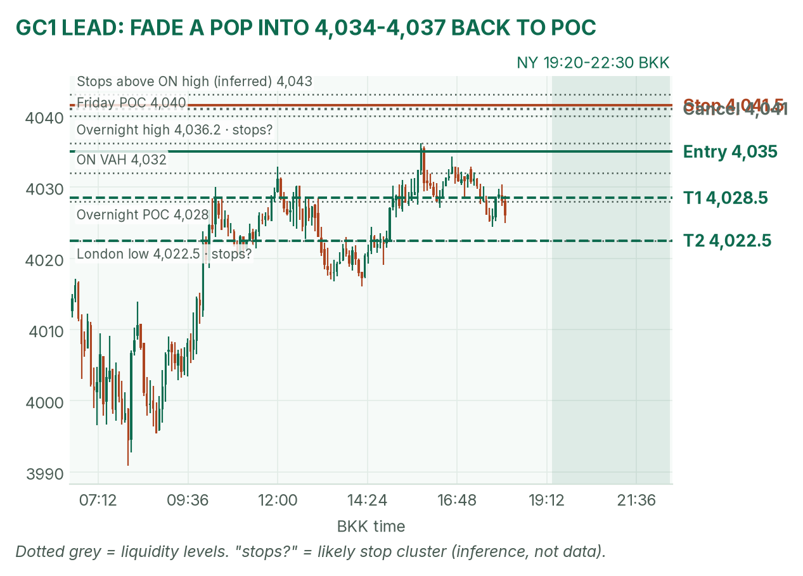
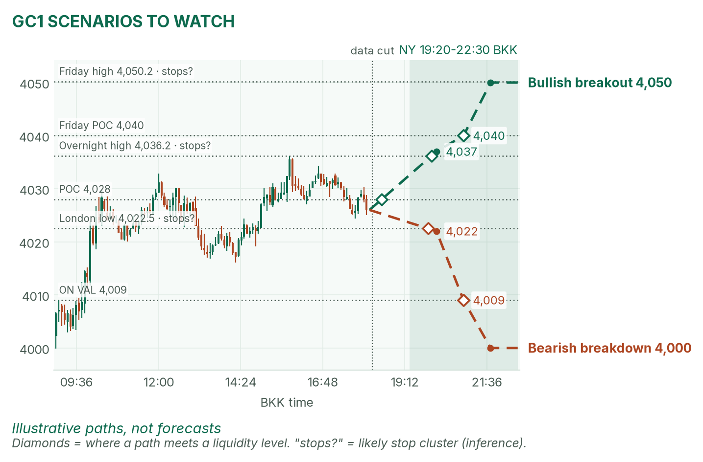
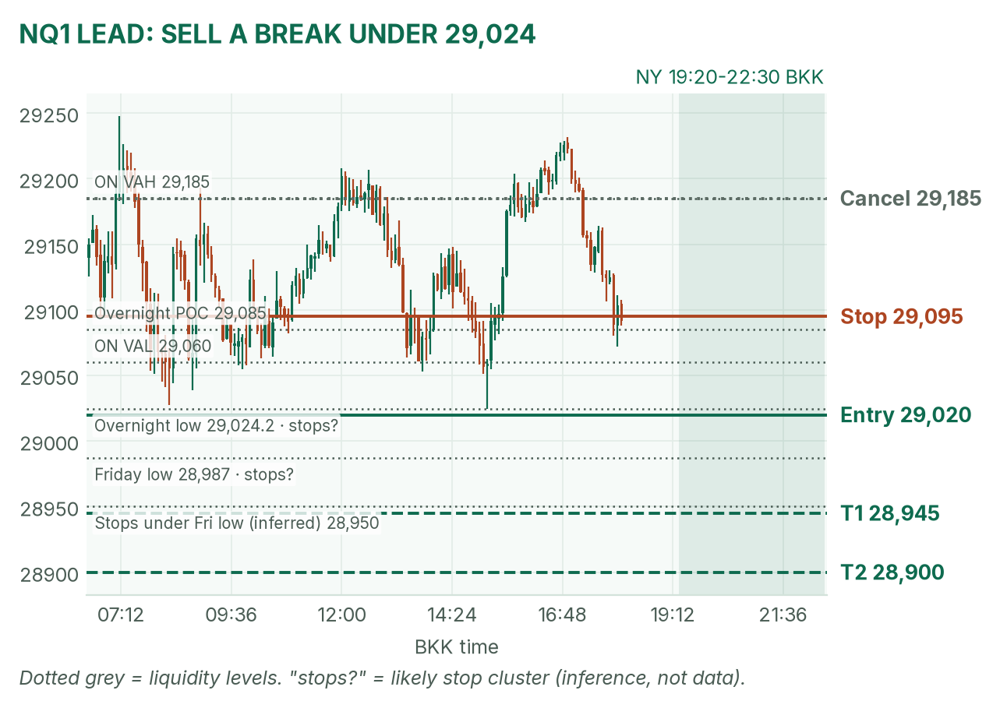
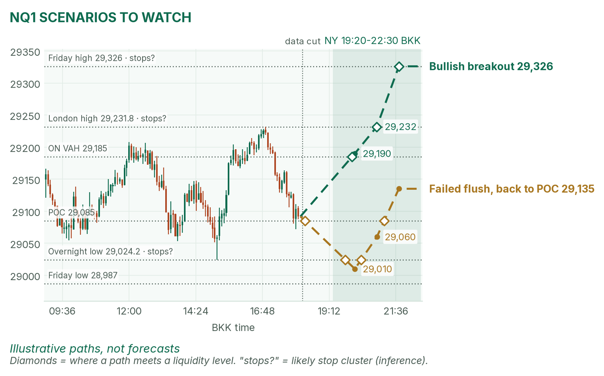

A quiet Monday before a loud week. Gold sits on its busiest price; Nasdaq leans on its overnight floor.
Window 19:20–22:30 BKK (US clocks change Nov 1). Data cut 18:10 BKK: GC 4,026.0, NQ 29,091.75 (TopstepX Z26, last complete 5m bar). Levels only. Ideas, not advice.
Summary
GC: fade a failed pop into 4,034–4,037. Stop 4,041.5, target 4,022.5, the London low (1.9R). About 40%.
NQ: sell a 5m close under the overnight low, 29,024.25. Stop 29,095, target 28,900 (1.6R). About 38%.
Only minor US data inside the window. No entries 19:25–19:32 or 21:25–21:32.
Flat by 22:30, no matter what.
The market story
Gold had its worst week since June, then bounced from 3,990.9 at 08:00 this morning to 4,036.2 in London. Cheaper oil helped by easing rate-hike fears. Interest rates are the price of borrowing money, and gold pays none, so when the 10-year US yield slips (4.97% this morning, per April) gold gets a small lift. It has drifted back to 4,026, near its overnight POC (the busiest price).
Nasdaq futures tagged 29,345, then sold off to 29,024.25 in London as Asian chip stocks fell before this week's big AI earnings.
How I read it: both markets are coiling ahead of Wednesday's Fed decision and Microsoft and Alphabet earnings. I only trade the edges.
News (BKK)
Time
Event
Forecast
Prior
Read
19:30
Chicago Fed activity index
-0.10
-0.04
Low impact. Hot (strong) nudges yields up, a mild weight on gold and NQ. Cold helps both.
21:30
Dallas Fed factory survey
7.0
9.8
22:30
3- and 6-month bill auctions
prior 4.095% / 4.22%
Rarely moves futures.
No-trade zones: 19:25–19:32 and 21:25–21:32. No Fed speakers (quiet period before Wednesday). Iran headlines are the wild card.
Levels to watch
Level
GC
NQ
Friday high / low
4,050.2 / 3,989.1
29,326 / 28,987
Overnight high
4,036.2
29,345
Overnight value area (where 70% of volume traded)
4,009–4,032
29,060–29,185
Overnight POC
4,028
29,085
London low
4,022.5
29,024.25 (also overnight low)
Overnight low
3,990.9
29,024.25
Typical window range (median / 80th pct, 20 days)
41 / 61 pts
327 / 410 pts
Gold (GC1)
Bias: neutral. The bigger trend is down; the 3,990.9 bounce holds. My NY gold rule takes the COMEX opening range from 19:20 and fades its edges back to the POC.
The trade: fade a failed pop
Entry
4,034–4,037 (plan 4,035): a pop to the overnight high that closes back below it on 5 minutes, after the COMEX range is set
Stop
4,041.5: above the overnight high and Friday's POC (4,040), where buy stops likely sit (an inference)
Targets
1R partial 4,028.5 (the POC) · full target 4,022.5, the London low (1.9R)
Cancel
A 5m close above 4,041 before entry, or price trades 4,022.5 first
Probability
~40%, an estimate. Basis: NY gold opening ranges mostly failed in my Aug–Oct study (not significant); 12.5 points to target is under a third of a typical window, and the stop is about 2.6 five-minute ATRs (average bar size, 2.5 pts).
Why: sell where the bounce ran out, with the downtrend. No pop, no trade. I won't short 4,026 in the middle. April half-agrees: she says gold must clear 4,032.9 to extend the bounce, and holding 3,990.9 keeps it alive. VWAP (volume-weighted average price) is a filter only after 19:50.

GC 5m bars to 18:10 BKK, window shaded. The bounce stalled at 4,036.2.

Illustrative paths, not forecasts: the other two setups at the liquidity levels.
Scenarios to watch
Bullish breakout: two 5m closes above 4,036.2. Aims for 4,040, then 4,050.2.
Bearish breakdown: a 15m close below 4,022.5. Aims for 4,009 (value low), then the round 4,000.
Nasdaq (NQ1)
Bias: mildly bearish. Chips are weak and every bounce fades. My NQ rule trades breaks of the fixed 5-minute range after the 20:30 stock open.
The trade: bearish breakdown
Entry
29,020 on a 5m close below 29,024.25 (overnight low) and the 20:30–20:35 range low
Stop
29,095: back above the overnight POC (29,085)
Targets
1R partial 28,945 · full target 28,900, under Friday's low (1.6R)
Cancel
NQ trades 29,185 (overnight value high) before entry, or no break by 22:00
Probability
~38%, an estimate. Basis: NQ 5-minute range breakouts averaged +0.37R in my study (31 sessions, not significant); 120 points to target is about a third of a typical window.
Why: sell stops likely sit under the overnight low and Friday's 28,987 (an inference). April calls 29,027.50 "the floor before the earnings", so a break is her warning sign: half-agree. Friday's identical short was stopped out. If it fails fast, I don't re-enter.

NQ 5m bars to 18:10 BKK, window shaded. Trigger sits under the floor.

Illustrative paths, not forecasts: breakout up and failed flush.
Scenarios to watch
Bullish breakout: a 5m close above the opening range and 29,185. Aims for 29,231.75 (London high), then 29,326.
Failed flush: a poke under 29,024.25 that closes back above 29,060 within 15 minutes. Aims for the POC, 29,085, then 29,135.
6E (not traded in NY): 1.1221, at the day's low of 1.12195 and near Friday's POC, 1.1217. London's long never triggered.
Before you click
ORB bases. GC NY: COMEX 19:20 range, ends at the first candle under half the average volume of the first two, fade to POC. NQ: fixed 5-minute range after 20:30, trade breakouts.
Checklist. 1) Room to today's max loss? 2) Within daily rules? 3) No release within 30 minutes? 4) Agrees with the bias? 5) At a marked level? 6) Setup tagged? 7) Entry, stop, 1R partial, target set? 8) Calm, not chasing?
Reset (60 seconds). Breathe in 4, hold 4, out 6, five times. Name the feeling in one word. Say the plan aloud. "Eager"? Wait 5 minutes.